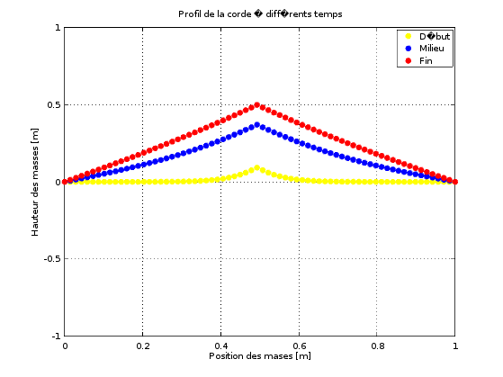

Your browser doesn't support the features required by impress.js, so you are presented with a simplified version of this presentation.
For the best experience please use the latest Chrome, Safari or Firefox browser.
Modélisation de la vibration d'une corde de violon
Moises Torres
Problématique
Construire un modèle suffisamment simple pour être approché numériquement pour reproduire l'essentiel du son caractéristique du violon.
Étape 1
Remplacer la corde par une seule masselotte attachée par des ressorts à un support fixe et sur laquelle l'archet vient frotter.Étape 2
Remplacer la corde par une série de masselottes reliées par des ressorts et en ne faisant frotter qu'une masselotte.Modèle continu
En considérant la loi de frottement de Coulomb on applique le Principe Fondamental de la Dynamique à la masselotte.
Ve: Vitesse de glissement de la mèche de l'archet.
S: Force d'appui de la mèche de l'archet.
k: raideur de l'archet.
m: masse de la masselotte.
mu: Coefficient de frottement.
* Glissement et Adhérence, les deux phases du phénomène de "Stick and Slip".
* Le coefficient de frottement est une fonction de la vitesse de glissement.
Discrétisation des équations
Méthodes numériques:
- Schéma implicite d'Euler (plus de stabilité).
- Méthode des différences finies.
Hypothèses simplificatrices
- La force longitudinale est négligée car très faible.
- La fréquence d'oscillation de la masselotte en contact avec l'archet est représentative de la corde.
Problème mathématique simplifié (Exemple pour 5 masselottes)
Le deuxième modèle contient la problématique du premier modèle.
Graphiques
Paramètres: L=1m, Nbr. Masselottes=70, position archet=35
m=0.5kg, S=0.3N, k=0.9 N/m,
Ve=0.5 m/s.

Malheureusement nos modèles sont loin d'être parfaits.
Cet écart dû principalemnt à nos hypothèse simplificatrices et méthodes numériques utilisées:
Use a spacebar or arrow keys to navigate